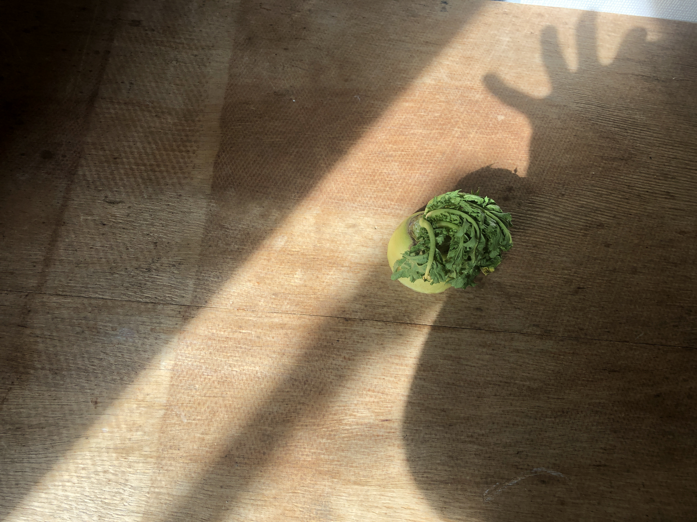

Create
These questions were created by
これは、
Hiroki Yamasaki
が考えた 10の質問です。

Hiroki Yamasaki
woopheadclrms
Musician. Owner of Label "Ukiuki Atama".
音楽家。レーベル Ukiuki Atama主催。
Website
Sufaip
Ukiuki Atama
View All Answers